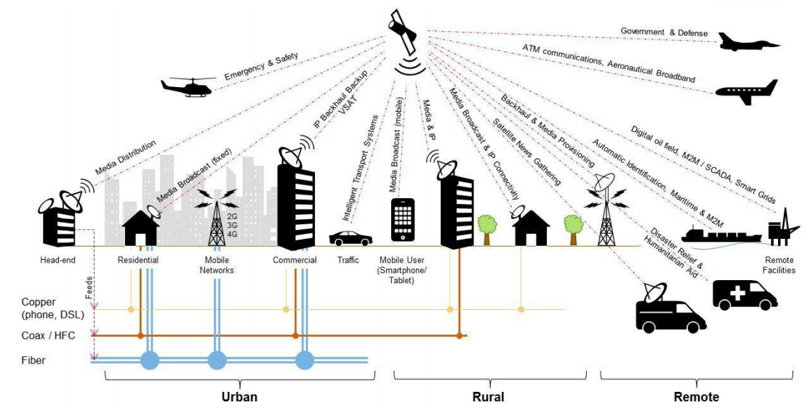

CAPITULO 1: INTRODUCCIÓN A LAS REDES DE COMUNICACIONES MÓVILES
PROBLEMAS FUNDAMENTALES EN COMUNICACIONES MÓVILES
DIFICULTADES A LAS QUE SE ENFRENTA
INTRODUCCIÓN A LA TELEFONÍA CELULAR
La telefonía celular es un sistema de comunicación totalmente inalámbrica.
Los teléfonos celulares han revolucionado el área de las comunicaciones, redefiniendo cómo percibimos las comunicaciones de voz
HISTORIA DE LA TELEFONÍA CELULAR
Generaciones DE LA TELEFONÍA CELULAR
Videos Informativos
TECNOLOGÍAS DE COMUNICACIONES MÓVILES EXISTENTES
Buscapersonas (Paging)
Características:
Los buscapersonas están diseñados para oír un canal de frecuencia
Información contenida en esta frecuencia puede ser un tono, voz o datos en forma digital
En los sistemas de buscapersonas es fundamental el protocolo de señalización
BANDAS DE FRECUENCIA: Sistemas SBU
470 – 472 MHz
482 – 487 MHz
929 – 932 MHz
BANDAS DE FRECUENCIA: Sistemas SBB
901 – 902 MHz (Estación terminal – Estación base)
940 – 941 MHz (Estación base – Estación terminal)
Arquitectura
SATÉLITES DE COMUNICACIONES
Permiten al usuario final del servicio, mediante un equipo terminal móvil o fijo, disponer de comunicación para la transmisión y recepción de voz, datos o información de cualquier naturaleza, que lleguen al usuario final de manera directa mediante enlaces satelitales.

Asignacion de frecuencias
RADIO MÓVIL
Características:
Es análoga, y hace uso de frecuencias únicas para enviar y recibir señales
Comunicación es en un sólo sentido a la vez (half duplex)
Usado en servicios de emergencia, el sector del transporte y la industria de la seguridad
REDES INALÁMBRICAS DE ÁREA PERSONAL (WPAN - IEEE 802.15)
Bluetooth (sustitución de cables)
Distancia de comunicación de hasta 1 km
Uso de frecuencia libre de 2,4 GHz
Tiempo de retardo reducido (5-10 ms)
Ultrawideband (alta precisión y tasa de transmisión)
Frecuencias desde 3.1 GHz hasta 10.6 GHz
El alcance es de 10m
Potencias radiadas de 100 – 250 mW
Zigbee (consumo energético mínimo)
Velocidades comprendidas entre 20 kB/s y 250 kB/s
Rangos de alcance son de 10 m a 75 m
Bandas libres ISM (6) de 2,4 GHz (Mundial), 868 MHz Europa y 915 MHz EEUU
Video Informativo
REDES INALÁMBRICAS DE ÁREA METROPOLITANA
IEEE 802.16 / Wi-Max
Tipos de Redes
Redes Ad-Hoc: autoconfigurabilidad, adaptatividad
Redes de sensores: bajo coste, la energía es un elemento clave de diseño
Redes de control distribuidas: incrementan considerablemente las capacidades de automatización
Versiones IEEE 802.16 / Wi-Max
Video Informativo
COMPARACIÓN DE PRESTACIONES
ALCANCE
TASA
CONSUMO
EFECTOS NOCIVOS DEL CANAL INALÁMBRICO MÓVIL
INTRODUCCIÓN A LAS COMUNICACIONES INALÁMBRICAS MÓVILES
TELEFONÍA MÓVIL
Características:
Tanto las antenas como los terminales son emisores-receptores de ondas electromagnéticas con frecuencias entre 900 y 2000 MHz.
La operadora reparte el área de cobertura en varios espacios llamados células, normalmente hexagonales.
En cada célula hay una estación base que será una antena que tiene una amplitud para emitir y recibir en ese hexágono de espacio (célula)
CRITERIOS IMPORTANTES EN LA EVALUACIÓN DE UN SISTEMA INALÁMBRICO
Por tratarse de frecuencias de uso compartido, con el correspondiente riesgo de saturación e indisponibilidad de la red
Se basa en tecnologías de alta frecuencia (entre 28 y 40 GHz)
No requieren de la instalación de antenas permiten teléfonos inalámbricos fijos y terminales móviles
Fixed Wíreless Access - FWA
Características
Es un tipo de comunicación de datos de banda ancha inalámbrica, que se realiza entre dos ubicaciones fijas, conectadas a través de dispositivos y equipos de acceso inalámbrico fijo
Requieren de la instalación de antenas fijas en las casas
Sistemas PCS
Características
Operan en las bandas de radio de 1800 o 1900 MHz
Movilidad personal y movilidad de terminal
Servicios multimedia de calidad
Único numero
Alta capacidad
Handset universal
Seguridad
Satelital (GMPCS)
Características
GMPCS es un sistema de comunicación personal que proporciona cobertura transnacional, regional o global desde una constelación de satélites accesibles con terminales pequeñas y fácilmente transportables
Voz y datos de baja velocidad en tiempo real
Espectro electromagnético de radio frecuencia
CRECIMIENTO DE LA TELEFONÍA CELULAR EN EL ECUADOR - 2019
Participación de mercado
Modalidad
Durante el periodo 2008-2019, la modalidad prepago ha experimentado un crecimiento del 1,16%, mientras que la modalidad pospago ha tenido un crecimiento del 10,49%.
Líneas activas por tipo de servicio
Espectro de Frecuencias
Líneas Móviles por Tecnologías
Video Informativo
BIBLIOGRAFÍA
W. Castaño, J. Giron y O. Granada, 2014. [En línea]. Available: https://es.slideshare.net/cristobalquispequispe/telefonia-movil-40065967.
L. Goldberg, Paging And Messaging Technologies: Versatile Wireless Workhorses, 1998.
C. Santamaria, «BIBING,» 2012. [En línea]. Available: http://bibing.us.es/proyectos/abreproy/11761/fichero/Volumen1%252F6-Cap%C3%ADtulo2+-+Redes+inal%C3%A1mbricas+de+%C3%A1rea+personal+%28WPAN%29.pdf+.
Analfatécnicos, «Manual de radialistas,» [En línea]. Available: https://www.analfatecnicos.net/pregunta.php?id=85.

 Archivos y Software
Archivos y Software